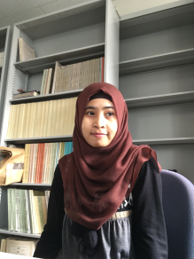

- Education
-
Tokyo Institute of Technology - Japan
Department: Computer Science (Master of Engineering, 2015)
Laboratory: Natural Language Processing/ Computational Linguistic
Universitas Sebelas Maret - Indonesia
Department: Computer Science (Bachelor of Informatics, 2011)
- Publications
-
International Conference (refereed)
- Yuni Susanti, Hitoshi Nishikawa, Tokunaga Takenobu and Obari Hiroyuki, Item Difficulty Analysis of English Vocabulary Questions, Proceedings of the 8th International Conference on Computer Supported Education (CSEDU 2016), pages 267-274, 2016. May [pdf]
- Yuni Susanti, Ryu Iida and Takenobu Tokunaga, Automatic generation of English vocabulary tests, Proceedings of the 7th International Conference on Computer Supported Education (CSEDU 2015), pages 77-87, 2015. May. [pdf]
- Yuni Susanti, Ryu Iida and Takenobu Tokunaga, Collecting pairs of word senses and their context sentences for generating English vocabulary tests, Work-in-Progress Poster (WIPP) Proceedings of the 22nd International Conference on Computers in Education (ICCE 2014), pages 52-54, 2014. Dec. [pdf]
International Journal (refereed)
- Yuni Susanti, Takenobu Tokunaga, Hitoshi Nishikawa, Hiroyuki Obari, Controlling item difficulty for automatic vocabulary question generation, Research and Practice in Technology Enhanced Learning, Vol.12, No.25, 2017, December [pdf]
- Yuni Susanti, Takenobu Tokunaga, Hitoshi Nishikawa and Hiroyuki Obari, Evaluation of automatically generated English vocabulary questions, Research and Practice in Technology Enhanced Learning, Vol.12, No.11, 2017, Mar [pdf]
- Hobbies
-
I normally spend 50% of my whole day for book and movies, 20% for drawing, 10% for writing (you might find lots of creepy love poems and short-stories in this blog), and the rest for others (yes, yes, doing research is one of them ^^).